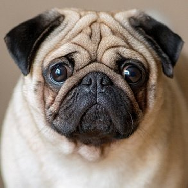
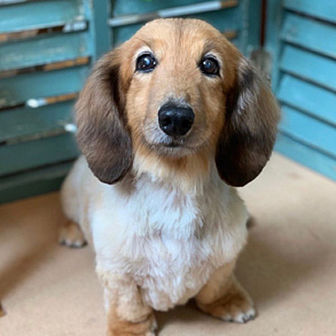

Виды маленьких собак

Какие существуют породы маленьких собак?

Мопс является древней и невероятно популярной на
протяжении веков породой собак-компаньонов для городских жителей.

Карликовая такса -
миниатюрная родственница стандартной таксы. Имеет схожий характер, но меньшие размеры.
Немецкий шпиц -
старейшая порода собак Европы. Очень активная, дружелюбная и преданная своим хозяевам.